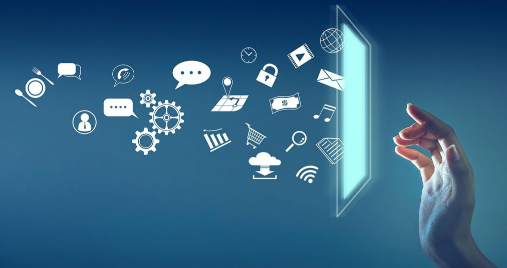

Bem-vindo à ConecTodos
Junte-se a nós na missão de capacitar jovens em vulnerabilidade social através da tecnologia.

Sobre Nós
A ConecTodos nasceu com o propósito de transformar vidas por meio da educação digital. Acreditamos que o acesso
ao conhecimento em informática é uma poderosa ferramenta de inclusão social e de construção de futuros mais
justos e cheios de oportunidades.
Nosso trabalho é voltado para crianças em situação de vulnerabilidade, oferecendo aulas gratuitas de informática
básica em um ambiente acolhedor, seguro e inspirador. Aqui, cada criança tem a chance de aprender a usar o
computador, desenvolver habilidades digitais e descobrir novas possibilidades para o futuro.
Mais do que ensinar tecnologia, queremos formar cidadãos preparados, conscientes e confiantes de que podem
conquistar seus sonhos.
Com o apoio de voluntários, parceiros e doações, seguimos firmes em nossa missão: reduzir a desigualdade digital
e abrir portas para um mundo de oportunidades.Somos uma organização sem fins lucrativos com o objetivo de
proporcionar o ingresso de jovens em vulnerabilidade social ao mundo digital.
Nossos projetos são focados em capacitar jovens em vulnerabilidade social através da tecnologia. Oferecemos
cursos de informática básica, programação e desenvolvimento web, além de workshops sobre segurança digital e
cidadania online. Cada projeto é desenvolvido com o objetivo de proporcionar habilidades práticas que possam abrir
portas para oportunidades educacionais e profissionais.
Missão
Capacitar jovens em vulnerabilidade social através da educação digital, promovendo inclusão e oportunidades
para um futuro melhor.
Visão
Ser referência na transformação social por meio da tecnologia, impactando positivamente a vida de milhares de
jovens em todo o país.
Valores
Inclusão, Educação, Solidariedade, Inovação e Compromisso com a comunidade.
🕰️ Histórico
A Conexão para Todos nasceu em 2020, durante um projeto acadêmico que buscava entender como a tecnologia
poderia reduzir desigualdades.
O que começou como uma iniciativa estudantil se transformou em uma rede colaborativa de voluntários, empresas
parceiras e educadores comprometidos em promover o acesso digital.
Hoje, já impactamos centenas de jovens, oferecendo cursos gratuitos de informática, programação e cidadania
digital em diversas comunidades.
🏆 Conquistas
Mais de 500 jovens capacitados em habilidades digitais básicas e intermediárias;
- Parcerias com escolas e empresas de tecnologia;
- Criação de um laboratório comunitário de informática;
- Reconhecimento em programas de inovação social locais;
- Certificação de voluntários e mentorias personalizadas para jovens talentos.
- Essas conquistas refletem o compromisso da ONG em construir um futuro mais conectado e igualitário.
📊 Relatórios de Transparência
A transparência é um dos nossos maiores compromissos.
Todos os nossos relatórios financeiros, de impacto e de projetos são públicos e revisados periodicamente.
Neles, apresentamos:
Origem e aplicação dos recursos;
Resultados das campanhas de doação;
Indicadores de desempenho e metas atingidas;
Depoimentos de participantes e voluntários.
Esses relatórios podem ser acessados gratuitamente em nossa Central de Documentos Públicos, reforçando nossa
responsabilidade social e confiança junto à comunidade.
💌 Newsletter
A newsletter “Conecte-se” é enviada mensalmente aos nossos apoiadores e interessados.
Ela traz novidades sobre os projetos, oportunidades de voluntariado, resultados de impacto e formas de participar
das campanhas.
Assinar é gratuito e uma ótima maneira de acompanhar o crescimento da ONG de perto.